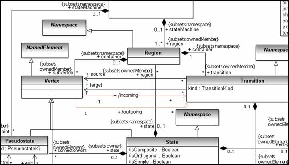

<html xmlns:v="urn:schemas-microsoft-com:vml"
xmlns:o="urn:schemas-microsoft-com:office:office"
xmlns:w="urn:schemas-microsoft-com:office:word"
xmlns:st1="urn:schemas-microsoft-com:office:smarttags"
xmlns="http://www.w3.org/TR/REC-html40">

<head>
<meta http-equiv=Content-Type content="text/html; charset=windows-1252">
<meta name=ProgId content=Word.Document>
<meta name=Generator content="Microsoft Word 10">
<meta name=Originator content="Microsoft Word 10">
<link rel=File-List href="guide_files/filelist.xml">
<link rel=Preview href="guide_files/preview.wmf">
<link rel=Edit-Time-Data href="guide_files/editdata.mso">
<!--[if !mso]>
<style>
v\:* {behavior:url(#default#VML);}
o\:* {behavior:url(#default#VML);}
w\:* {behavior:url(#default#VML);}
.shape {behavior:url(#default#VML);}
</style>
<![endif]-->
<title>UML2 2.1 Migration Guide</title>
<o:SmartTagType namespaceuri="urn:schemas-microsoft-com:office:smarttags"
 name="country-region"/>
<o:SmartTagType namespaceuri="urn:schemas-microsoft-com:office:smarttags"
 name="place"/>
<o:SmartTagType namespaceuri="urn:schemas-microsoft-com:office:smarttags"
 name="date"/>
<!--[if gte mso 9]><xml>
 <o:DocumentProperties>
  <o:Author>jbruck, khussey</o:Author>
  <o:Template>Normal</o:Template>
  <o:LastAuthor>jbruck</o:LastAuthor>
  <o:Revision>2</o:Revision>
  <o:TotalTime>23531</o:TotalTime>
  <o:LastPrinted>2006-09-12T15:08:00Z</o:LastPrinted>
  <o:Created>2007-07-19T20:38:00Z</o:Created>
  <o:LastSaved>2007-07-19T20:38:00Z</o:LastSaved>
  <o:Pages>1</o:Pages>
  <o:Words>1645</o:Words>
  <o:Characters>9379</o:Characters>
  <o:Company>IBM</o:Company>
  <o:Lines>78</o:Lines>
  <o:Paragraphs>22</o:Paragraphs>
  <o:CharactersWithSpaces>11002</o:CharactersWithSpaces>
  <o:Version>10.6830</o:Version>
 </o:DocumentProperties>
</xml><![endif]--><!--[if gte mso 9]><xml>
 <w:WordDocument>
  <w:SpellingState>Clean</w:SpellingState>
  <w:GrammarState>Clean</w:GrammarState>
  <w:Compatibility>
   <w:ApplyBreakingRules/>
  </w:Compatibility>
  <w:BrowserLevel>MicrosoftInternetExplorer4</w:BrowserLevel>
 </w:WordDocument>
</xml><![endif]--><!--[if !mso]><object
 classid="clsid:38481807-CA0E-42D2-BF39-B33AF135CC4D" id=ieooui></object>
<style>
st1\:*{behavior:url(#ieooui) }
</style>
<![endif]-->
<link rel=Stylesheet type="text/css" media=all href="default_style.css">
<style>
<!--
 /* Font Definitions */
 @font-face
	{font-family:"MS Mincho";
	panose-1:2 2 6 9 4 2 5 8 3 4;
	mso-font-alt:"\FF2D\FF33 \660E\671D";
	mso-font-charset:128;
	mso-generic-font-family:modern;
	mso-font-pitch:fixed;
	mso-font-signature:-1610612033 1757936891 16 0 131231 0;}
@font-face
	{font-family:Tahoma;
	panose-1:2 11 6 4 3 5 4 4 2 4;
	mso-font-charset:0;
	mso-generic-font-family:swiss;
	mso-font-pitch:variable;
	mso-font-signature:1627421319 -2147483648 8 0 66047 0;}
@font-face
	{font-family:Verdana;
	panose-1:2 11 6 4 3 5 4 4 2 4;
	mso-font-charset:0;
	mso-generic-font-family:swiss;
	mso-font-pitch:variable;
	mso-font-signature:536871559 0 0 0 415 0;}
@font-face
	{font-family:"\@MS Mincho";
	panose-1:2 2 6 9 4 2 5 8 3 4;
	mso-font-charset:128;
	mso-generic-font-family:modern;
	mso-font-pitch:fixed;
	mso-font-signature:-1610612033 1757936891 16 0 131231 0;}
 /* Style Definitions */
 p.MsoNormal, li.MsoNormal, div.MsoNormal
	{mso-style-parent:"";
	margin:0in;
	margin-bottom:.0001pt;
	mso-pagination:widow-orphan;
	font-size:12.0pt;
	font-family:"Times New Roman";
	mso-fareast-font-family:"Times New Roman";
	mso-believe-normal-left:yes;}
h1
	{mso-margin-top-alt:auto;
	margin-right:0in;
	mso-margin-bottom-alt:auto;
	margin-left:0in;
	mso-pagination:widow-orphan;
	mso-outline-level:1;
	font-size:21.0pt;
	mso-fareast-font-family:"MS Mincho";
	font-weight:bold;}
h2
	{mso-margin-top-alt:auto;
	margin-right:0in;
	mso-margin-bottom-alt:auto;
	margin-left:0in;
	mso-line-height-alt:10.5pt;
	mso-pagination:widow-orphan;
	mso-outline-level:2;
	font-size:18.0pt;
	mso-fareast-font-family:"MS Mincho";
	font-weight:bold;}
h3
	{mso-margin-top-alt:auto;
	margin-right:0in;
	mso-margin-bottom-alt:auto;
	margin-left:0in;
	mso-pagination:widow-orphan;
	mso-outline-level:3;
	font-size:14.0pt;
	mso-fareast-font-family:"MS Mincho";
	font-weight:bold;}
h4
	{mso-style-next:Normal;
	margin-top:12.0pt;
	margin-right:0in;
	margin-bottom:3.0pt;
	margin-left:0in;
	mso-pagination:widow-orphan;
	page-break-after:avoid;
	mso-outline-level:4;
	font-size:12.0pt;
	mso-bidi-font-size:14.0pt;
	font-family:Arial;
	mso-bidi-font-family:"Times New Roman";
	font-weight:bold;}
p.MsoCaption, li.MsoCaption, div.MsoCaption
	{mso-style-noshow:yes;
	mso-style-next:Normal;
	margin-top:6.0pt;
	margin-right:0in;
	margin-bottom:6.0pt;
	margin-left:0in;
	mso-pagination:widow-orphan;
	font-size:10.0pt;
	font-family:"Times New Roman";
	mso-fareast-font-family:"Times New Roman";
	font-weight:bold;}
a:link, span.MsoHyperlink
	{color:blue;
	text-decoration:underline;
	text-underline:single;}
a:visited, span.MsoHyperlinkFollowed
	{color:purple;
	text-decoration:underline;
	text-underline:single;}
p.MsoDocumentMap, li.MsoDocumentMap, div.MsoDocumentMap
	{mso-style-noshow:yes;
	margin:0in;
	margin-bottom:.0001pt;
	mso-pagination:widow-orphan;
	background:navy;
	font-size:12.0pt;
	font-family:Tahoma;
	mso-fareast-font-family:"Times New Roman";}
p
	{mso-margin-top-alt:auto;
	margin-right:0in;
	mso-margin-bottom-alt:auto;
	margin-left:0in;
	mso-pagination:widow-orphan;
	font-size:10.0pt;
	mso-fareast-font-family:"Times New Roman";}
code
	{mso-fareast-font-family:"Times New Roman";}
pre
	{margin:0in;
	margin-bottom:.0001pt;
	mso-pagination:widow-orphan;
	tab-stops:45.8pt 91.6pt 137.4pt 183.2pt 229.0pt 274.8pt 320.6pt 366.4pt 412.2pt 458.0pt 503.8pt 549.6pt 595.4pt 641.2pt 687.0pt 732.8pt;
	font-size:10.0pt;
	mso-fareast-font-family:"Times New Roman";}
tt
	{font-family:"Courier New";
	mso-ascii-font-family:"Courier New";
	mso-fareast-font-family:"Times New Roman";
	mso-hansi-font-family:"Courier New";
	mso-bidi-font-family:"Courier New";}
p.indextop, li.indextop, div.indextop
	{mso-style-name:indextop;
	mso-margin-top-alt:auto;
	margin-right:0in;
	mso-margin-bottom-alt:auto;
	margin-left:0in;
	mso-pagination:widow-orphan;
	font-size:24.0pt;
	mso-fareast-font-family:"Times New Roman";
	font-weight:bold;}
p.indexsub, li.indexsub, div.indexsub
	{mso-style-name:indexsub;
	mso-margin-top-alt:auto;
	margin-right:0in;
	mso-margin-bottom-alt:auto;
	margin-left:0in;
	mso-pagination:widow-orphan;
	font-size:7.5pt;
	mso-fareast-font-family:"Times New Roman";}
ins
	{mso-style-type:export-only;
	text-decoration:none;}
span.SpellE
	{mso-style-name:"";
	mso-spl-e:yes;}
span.GramE
	{mso-style-name:"";
	mso-gram-e:yes;}
@page Section1
	{size:8.5in 11.0in;
	margin:1.0in 1.25in 1.0in 1.25in;
	mso-header-margin:.5in;
	mso-footer-margin:.5in;
	border:solid windowtext 1.0pt;
	mso-border-alt:solid windowtext .5pt;
	padding:24.0pt 24.0pt 24.0pt 24.0pt;
	mso-paper-source:0;}
div.Section1
	{page:Section1;}
 /* List Definitions */
 @list l0
	{mso-list-id:1169830533;
	mso-list-type:hybrid;
	mso-list-template-ids:1364484028 67698703 67698713 67698715 67698703 67698713 67698715 67698703 67698713 67698715;}
@list l0:level1
	{mso-level-tab-stop:.5in;
	mso-level-number-position:left;
	text-indent:-.25in;}
@list l0:level2
	{mso-level-number-format:alpha-lower;
	mso-level-tab-stop:1.0in;
	mso-level-number-position:left;
	text-indent:-.25in;}
@list l0:level3
	{mso-level-tab-stop:1.5in;
	mso-level-number-position:left;
	text-indent:-.25in;}
@list l0:level4
	{mso-level-tab-stop:2.0in;
	mso-level-number-position:left;
	text-indent:-.25in;}
@list l0:level5
	{mso-level-tab-stop:2.5in;
	mso-level-number-position:left;
	text-indent:-.25in;}
@list l0:level6
	{mso-level-tab-stop:3.0in;
	mso-level-number-position:left;
	text-indent:-.25in;}
@list l0:level7
	{mso-level-tab-stop:3.5in;
	mso-level-number-position:left;
	text-indent:-.25in;}
@list l0:level8
	{mso-level-tab-stop:4.0in;
	mso-level-number-position:left;
	text-indent:-.25in;}
@list l0:level9
	{mso-level-tab-stop:4.5in;
	mso-level-number-position:left;
	text-indent:-.25in;}
ol
	{margin-bottom:0in;}
ul
	{margin-bottom:0in;}
-->
</style>
<!--[if gte mso 10]>
<style>
 /* Style Definitions */
 table.MsoNormalTable
	{mso-style-name:"Table Normal";
	mso-tstyle-rowband-size:0;
	mso-tstyle-colband-size:0;
	mso-style-noshow:yes;
	mso-style-parent:"";
	mso-padding-alt:0in 5.4pt 0in 5.4pt;
	mso-para-margin:0in;
	mso-para-margin-bottom:.0001pt;
	mso-pagination:widow-orphan;
	font-size:10.0pt;
	font-family:"Times New Roman";}
table.MsoTableSimple2
	{mso-style-name:"Table Simple 2";
	mso-tstyle-rowband-size:0;
	mso-tstyle-colband-size:0;
	mso-padding-alt:0in 5.4pt 0in 5.4pt;
	mso-para-margin:0in;
	mso-para-margin-bottom:.0001pt;
	mso-pagination:widow-orphan;
	font-size:10.0pt;
	font-family:"Times New Roman";}
table.MsoTableSimple2FirstRow
	{mso-style-name:"Table Simple 2";
	mso-table-condition:first-row;
	mso-tstyle-border-bottom:1.5pt solid black;
	mso-tstyle-diagonal-down:0in none windowtext;
	mso-tstyle-diagonal-up:0in none windowtext;
	font-size:10.0pt;
	mso-ansi-font-size:10.0pt;
	mso-bidi-font-size:10.0pt;
	font-family:Arial;
	mso-ascii-font-family:Arial;
	mso-hansi-font-family:Arial;
	mso-bidi-font-family:Arial;
	mso-ansi-font-weight:bold;
	mso-bidi-font-weight:bold;}
table.MsoTableSimple2LastRow
	{mso-style-name:"Table Simple 2";
	mso-table-condition:last-row;
	mso-tstyle-border-top:.75pt solid black;
	mso-tstyle-diagonal-down:0in none windowtext;
	mso-tstyle-diagonal-up:0in none windowtext;
	font-size:10.0pt;
	mso-ansi-font-size:10.0pt;
	mso-bidi-font-size:10.0pt;
	font-family:Arial;
	mso-ascii-font-family:Arial;
	mso-hansi-font-family:Arial;
	mso-bidi-font-family:Arial;
	color:windowtext;
	mso-ansi-font-weight:bold;
	mso-bidi-font-weight:bold;}
table.MsoTableSimple2FirstCol
	{mso-style-name:"Table Simple 2";
	mso-table-condition:first-column;
	mso-tstyle-border-right:1.5pt solid black;
	mso-tstyle-diagonal-down:0in none windowtext;
	mso-tstyle-diagonal-up:0in none windowtext;
	font-size:10.0pt;
	mso-ansi-font-size:10.0pt;
	mso-bidi-font-size:10.0pt;
	font-family:Arial;
	mso-ascii-font-family:Arial;
	mso-hansi-font-family:Arial;
	mso-bidi-font-family:Arial;
	mso-ansi-font-weight:bold;
	mso-bidi-font-weight:bold;}
table.MsoTableSimple2LastCol
	{mso-style-name:"Table Simple 2";
	mso-table-condition:last-column;
	mso-tstyle-border-left:.75pt solid black;
	mso-tstyle-diagonal-down:0in none windowtext;
	mso-tstyle-diagonal-up:0in none windowtext;
	font-size:10.0pt;
	mso-ansi-font-size:10.0pt;
	mso-bidi-font-size:10.0pt;
	font-family:Arial;
	mso-ascii-font-family:Arial;
	mso-hansi-font-family:Arial;
	mso-bidi-font-family:Arial;
	mso-ansi-font-weight:bold;
	mso-bidi-font-weight:bold;}
table.MsoTableSimple2NECell
	{mso-style-name:"Table Simple 2";
	mso-table-condition:ne-cell;
	mso-tstyle-border-left:0in none windowtext;
	mso-tstyle-diagonal-down:0in none windowtext;
	mso-tstyle-diagonal-up:0in none windowtext;
	font-size:10.0pt;
	mso-ansi-font-size:10.0pt;
	mso-bidi-font-size:10.0pt;
	font-family:Arial;
	mso-ascii-font-family:Arial;
	mso-hansi-font-family:Arial;
	mso-bidi-font-family:Arial;
	mso-ansi-font-weight:bold;
	mso-bidi-font-weight:bold;}
table.MsoTableSimple2SWCell
	{mso-style-name:"Table Simple 2";
	mso-table-condition:sw-cell;
	mso-tstyle-border-top:0in none windowtext;
	mso-tstyle-diagonal-down:0in none windowtext;
	mso-tstyle-diagonal-up:0in none windowtext;
	font-size:10.0pt;
	mso-ansi-font-size:10.0pt;
	mso-bidi-font-size:10.0pt;
	font-family:Arial;
	mso-ascii-font-family:Arial;
	mso-hansi-font-family:Arial;
	mso-bidi-font-family:Arial;
	mso-ansi-font-weight:bold;
	mso-bidi-font-weight:bold;}
table.MsoTableClassic1
	{mso-style-name:"Table Classic 1";
	mso-tstyle-rowband-size:0;
	mso-tstyle-colband-size:0;
	border-top:solid black 1.5pt;
	border-left:none;
	border-bottom:solid black 1.5pt;
	border-right:none;
	mso-padding-alt:0in 5.4pt 0in 5.4pt;
	mso-para-margin:0in;
	mso-para-margin-bottom:.0001pt;
	mso-pagination:widow-orphan;
	font-size:10.0pt;
	font-family:"Times New Roman";}
table.MsoTableClassic1FirstRow
	{mso-style-name:"Table Classic 1";
	mso-table-condition:first-row;
	mso-tstyle-border-bottom:.75pt solid black;
	mso-tstyle-diagonal-down:0in none windowtext;
	mso-tstyle-diagonal-up:0in none windowtext;
	font-size:10.0pt;
	mso-ansi-font-size:10.0pt;
	mso-bidi-font-size:10.0pt;
	font-family:Arial;
	mso-ascii-font-family:Arial;
	mso-hansi-font-family:Arial;
	mso-bidi-font-family:Arial;
	mso-ansi-font-style:italic;
	mso-bidi-font-style:italic;}
table.MsoTableClassic1LastRow
	{mso-style-name:"Table Classic 1";
	mso-table-condition:last-row;
	mso-tstyle-border-top:.75pt solid black;
	mso-tstyle-diagonal-down:0in none windowtext;
	mso-tstyle-diagonal-up:0in none windowtext;
	font-size:10.0pt;
	mso-ansi-font-size:10.0pt;
	mso-bidi-font-size:10.0pt;
	font-family:Arial;
	mso-ascii-font-family:Arial;
	mso-hansi-font-family:Arial;
	mso-bidi-font-family:Arial;
	color:windowtext;}
table.MsoTableClassic1FirstCol
	{mso-style-name:"Table Classic 1";
	mso-table-condition:first-column;
	mso-tstyle-border-right:.75pt solid black;
	mso-tstyle-diagonal-down:0in none windowtext;
	mso-tstyle-diagonal-up:0in none windowtext;
	font-size:10.0pt;
	mso-ansi-font-size:10.0pt;
	mso-bidi-font-size:10.0pt;
	font-family:Arial;
	mso-ascii-font-family:Arial;
	mso-hansi-font-family:Arial;
	mso-bidi-font-family:Arial;}
table.MsoTableClassic1NECell
	{mso-style-name:"Table Classic 1";
	mso-table-condition:ne-cell;
	mso-tstyle-diagonal-down:0in none windowtext;
	mso-tstyle-diagonal-up:0in none windowtext;
	font-size:10.0pt;
	mso-ansi-font-size:10.0pt;
	mso-bidi-font-size:10.0pt;
	font-family:Arial;
	mso-ascii-font-family:Arial;
	mso-hansi-font-family:Arial;
	mso-bidi-font-family:Arial;
	mso-ansi-font-weight:bold;
	mso-bidi-font-weight:bold;
	mso-ansi-font-style:normal;
	mso-bidi-font-style:normal;}
table.MsoTableClassic1SWCell
	{mso-style-name:"Table Classic 1";
	mso-table-condition:sw-cell;
	mso-tstyle-diagonal-down:0in none windowtext;
	mso-tstyle-diagonal-up:0in none windowtext;
	font-size:10.0pt;
	mso-ansi-font-size:10.0pt;
	mso-bidi-font-size:10.0pt;
	font-family:Arial;
	mso-ascii-font-family:Arial;
	mso-hansi-font-family:Arial;
	mso-bidi-font-family:Arial;
	mso-ansi-font-weight:bold;
	mso-bidi-font-weight:bold;}
table.MsoTableList1
	{mso-style-name:"Table List 1";
	mso-tstyle-rowband-size:1;
	mso-tstyle-colband-size:0;
	border-top:1.5pt;
	border-left:1.0pt;
	border-bottom:1.5pt;
	border-right:1.0pt;
	border-color:teal;
	border-style:solid;
	mso-border-top-alt:1.5pt;
	mso-border-left-alt:.75pt;
	mso-border-bottom-alt:1.5pt;
	mso-border-right-alt:.75pt;
	mso-border-color-alt:teal;
	mso-border-style-alt:solid;
	mso-padding-alt:0in 5.4pt 0in 5.4pt;
	mso-para-margin:0in;
	mso-para-margin-bottom:.0001pt;
	mso-pagination:widow-orphan;
	font-size:10.0pt;
	font-family:"Times New Roman";}
table.MsoTableList1FirstRow
	{mso-style-name:"Table List 1";
	mso-table-condition:first-row;
	mso-tstyle-shading:white;
	mso-tstyle-pattern:solid silver;
	mso-tstyle-border-bottom:.75pt solid black;
	mso-tstyle-diagonal-down:0in none windowtext;
	mso-tstyle-diagonal-up:0in none windowtext;
	font-size:10.0pt;
	mso-ansi-font-size:10.0pt;
	mso-bidi-font-size:10.0pt;
	font-family:Arial;
	mso-ascii-font-family:Arial;
	mso-hansi-font-family:Arial;
	mso-bidi-font-family:Arial;
	color:maroon;
	mso-ansi-font-weight:bold;
	mso-bidi-font-weight:bold;
	mso-ansi-font-style:italic;
	mso-bidi-font-style:italic;}
table.MsoTableList1LastRow
	{mso-style-name:"Table List 1";
	mso-table-condition:last-row;
	mso-tstyle-border-top:.75pt solid black;
	mso-tstyle-diagonal-down:0in none windowtext;
	mso-tstyle-diagonal-up:0in none windowtext;
	font-size:10.0pt;
	mso-ansi-font-size:10.0pt;
	mso-bidi-font-size:10.0pt;
	font-family:Arial;
	mso-ascii-font-family:Arial;
	mso-hansi-font-family:Arial;
	mso-bidi-font-family:Arial;}
table.MsoTableList1OddRow
	{mso-style-name:"Table List 1";
	mso-table-condition:odd-row;
	mso-tstyle-shading:white;
	mso-tstyle-pattern:solid silver;
	mso-tstyle-diagonal-down:0in none windowtext;
	mso-tstyle-diagonal-up:0in none windowtext;
	font-size:10.0pt;
	mso-ansi-font-size:10.0pt;
	mso-bidi-font-size:10.0pt;
	font-family:Arial;
	mso-ascii-font-family:Arial;
	mso-hansi-font-family:Arial;
	mso-bidi-font-family:Arial;
	color:windowtext;}
table.MsoTableList1EvenRow
	{mso-style-name:"Table List 1";
	mso-table-condition:even-row;
	mso-tstyle-diagonal-down:0in none windowtext;
	mso-tstyle-diagonal-up:0in none windowtext;
	font-size:10.0pt;
	mso-ansi-font-size:10.0pt;
	mso-bidi-font-size:10.0pt;
	font-family:Arial;
	mso-ascii-font-family:Arial;
	mso-hansi-font-family:Arial;
	mso-bidi-font-family:Arial;
	color:windowtext;}
table.MsoTableList1SWCell
	{mso-style-name:"Table List 1";
	mso-table-condition:sw-cell;
	mso-tstyle-diagonal-down:0in none windowtext;
	mso-tstyle-diagonal-up:0in none windowtext;
	font-size:10.0pt;
	mso-ansi-font-size:10.0pt;
	mso-bidi-font-size:10.0pt;
	font-family:Arial;
	mso-ascii-font-family:Arial;
	mso-hansi-font-family:Arial;
	mso-bidi-font-family:Arial;
	mso-ansi-font-weight:bold;
	mso-bidi-font-weight:bold;}
table.MsoTableList4
	{mso-style-name:"Table List 4";
	mso-tstyle-rowband-size:0;
	mso-tstyle-colband-size:0;
	border:solid black 1.5pt;
	mso-padding-alt:0in 5.4pt 0in 5.4pt;
	mso-border-insideh:.75pt solid black;
	mso-para-margin:0in;
	mso-para-margin-bottom:.0001pt;
	mso-pagination:widow-orphan;
	font-size:10.0pt;
	font-family:"Times New Roman";}
table.MsoTableList4FirstRow
	{mso-style-name:"Table List 4";
	mso-table-condition:first-row;
	mso-tstyle-shading:white;
	mso-tstyle-pattern:solid gray;
	mso-tstyle-border-bottom:1.5pt solid black;
	mso-tstyle-diagonal-down:0in none windowtext;
	mso-tstyle-diagonal-up:0in none windowtext;
	font-size:10.0pt;
	mso-ansi-font-size:10.0pt;
	mso-bidi-font-size:10.0pt;
	font-family:Arial;
	mso-ascii-font-family:Arial;
	mso-hansi-font-family:Arial;
	mso-bidi-font-family:Arial;
	color:white;
	mso-ansi-font-weight:bold;
	mso-bidi-font-weight:bold;}
</style>
<![endif]--><![if mso 9]>
<style>
p.MsoNormal
	{margin-left:8.5pt;}
</style>
<![endif]><!--[if gte mso 9]><xml>
 <o:shapedefaults v:ext="edit" spidmax="57346"/>
</xml><![endif]--><!--[if gte mso 9]><xml>
 <o:shapelayout v:ext="edit">
  <o:idmap v:ext="edit" data="1"/>
 </o:shapelayout></xml><![endif]-->
</head>

<body lang=EN-US link=blue vlink=purple style='tab-interval:.5in;margin-left:
8.5pt;margin-top:14.2pt'>

<div class=Section1>

<p class=MsoNormal align=right style='text-align:right'><span style='font-size:
10.0pt'>Copyright © 2007 International Business Machines Corp.</span><span
style='font-size:10.0pt;font-family:Arial'><o:p></o:p></span></p>

<div align=right>

<table class=MsoNormalTable border=0 cellspacing=0 cellpadding=0 width="100%"
 style='width:100.0%;mso-cellspacing:0in;mso-padding-alt:1.5pt 1.5pt 1.5pt 1.5pt'>
 <tr style='mso-yfti-irow:0;mso-yfti-lastrow:yes'>
  <td valign=top style='background:#0080C0;padding:1.5pt 1.5pt 1.5pt 1.5pt'>
  <p class=MsoNormal><b><span style='font-size:10.0pt;font-family:Arial;
  color:white'>&nbsp;</span></b><span style='font-size:10.0pt;font-family:Arial'><o:p></o:p></span></p>
  </td>
 </tr>
</table>

</div>

<h1></h1>

<p>&nbsp;</p>

<h1 align=center style='text-align:center'>UML2 2.1 Migration Guide</h1>

<h1 align=center style='text-align:center'><o:p>&nbsp;</o:p></h1>

<blockquote style='margin-top:5.0pt;margin-bottom:5.0pt'>

<p class=MsoNormal><b><span style='font-size:10.0pt;font-family:Arial'>Summary</span></b><span
style='font-size:10.0pt;font-family:Arial'><br style='mso-special-character:
line-break'>
<![if !supportLineBreakNewLine]><br style='mso-special-character:line-break'>
<![endif]><o:p></o:p></span></p>

<p>This guide looks at the most recent changes to the UML metamodel and
attempts to guide the user through the migration implications.<span
style='mso-spacerun:yes'>  </span>Relatively few changes have been made between
UML 2.0 and UML 2.1 so there is not much for clients to do in preparation of the
migration, however, clients still have to understand the implications. </p>

<p class=MsoNormal><span style='font-size:10.0pt;font-family:Arial'><o:p>&nbsp;</o:p></span></p>

<p><b>By James Bruck, Kenneth Hussey IBM</b><br>
<st1:date Month="7" Day="19" Year="2007">July 19, 2007</st1:date> </p>

</blockquote>

<div class=MsoNormal align=center style='text-align:center'><span
style='font-size:10.0pt;font-family:Arial'>

<hr size=2 width="100%" align=center>

</span></div>

<p><o:p>&nbsp;</o:p></p>

<h2>Glossary</h2>

<p>A few terms and abbreviations will be used throughout this document.</p>

<table class=MsoTableList4 border=1 cellspacing=0 cellpadding=0
 style='border-collapse:collapse;border:none;mso-border-alt:solid black 1.5pt;
 mso-yfti-tbllook:160;mso-padding-alt:0in 5.4pt 0in 5.4pt;mso-border-insideh:
 .75pt solid black'>
 <tr style='mso-yfti-irow:-1'>
  <td width=168 valign=top style='width:125.75pt;border:solid black 1.5pt;
  border-right:none;background:gray;mso-shading:white;mso-pattern:solid gray;
  padding:0in 5.4pt 0in 5.4pt'>
  <p style='mso-yfti-cnfc:1'><b><span style='color:white'>Term<o:p></o:p></span></b></p>
  </td>
  <td width=684 valign=top style='width:513.0pt;border:solid black 1.5pt;
  border-left:none;background:gray;mso-shading:white;mso-pattern:solid gray;
  padding:0in 5.4pt 0in 5.4pt'>
  <p style='mso-yfti-cnfc:1'><b><span style='color:white'>Definition<o:p></o:p></span></b></p>
  </td>
 </tr>
 <tr style='mso-yfti-irow:0'>
  <td width=168 valign=top style='width:125.75pt;border-top:none;border-left:
  solid black 1.5pt;border-bottom:solid black 1.0pt;border-right:none;
  mso-border-top-alt:solid black .75pt;mso-border-top-alt:solid black .75pt;
  mso-border-left-alt:solid black 1.5pt;mso-border-bottom-alt:solid black .75pt;
  padding:0in 5.4pt 0in 5.4pt'>
  <p><b style='mso-bidi-font-weight:normal'>UML2 2.1<o:p></o:p></b></p>
  </td>
  <td width=684 valign=top style='width:513.0pt;border-top:none;border-left:
  none;border-bottom:solid black 1.0pt;border-right:solid black 1.5pt;
  mso-border-top-alt:solid black .75pt;mso-border-top-alt:solid black .75pt;
  mso-border-bottom-alt:solid black .75pt;mso-border-right-alt:solid black 1.5pt;
  padding:0in 5.4pt 0in 5.4pt'>
  <p>Latest version of the API.</p>
  </td>
 </tr>
 <tr style='mso-yfti-irow:1'>
  <td width=168 valign=top style='width:125.75pt;border-top:none;border-left:
  solid black 1.5pt;border-bottom:solid black 1.0pt;border-right:none;
  mso-border-top-alt:solid black .75pt;mso-border-top-alt:solid black .75pt;
  mso-border-left-alt:solid black 1.5pt;mso-border-bottom-alt:solid black .75pt;
  padding:0in 5.4pt 0in 5.4pt'>
  <p><b style='mso-bidi-font-weight:normal'>UML2 2.0.4<o:p></o:p></b></p>
  </td>
  <td width=684 valign=top style='width:513.0pt;border-top:none;border-left:
  none;border-bottom:solid black 1.0pt;border-right:solid black 1.5pt;
  mso-border-top-alt:solid black .75pt;mso-border-top-alt:solid black .75pt;
  mso-border-bottom-alt:solid black .75pt;mso-border-right-alt:solid black 1.5pt;
  padding:0in 5.4pt 0in 5.4pt'>
  <p>Maintenance version. Based on older UML2 2.0 version but supports opening
  of 2.1 models.</p>
  </td>
 </tr>
 <tr style='mso-yfti-irow:2'>
  <td width=168 valign=top style='width:125.75pt;border-top:none;border-left:
  solid black 1.5pt;border-bottom:solid black 1.5pt;border-right:none;
  mso-border-top-alt:solid black .75pt;padding:0in 5.4pt 0in 5.4pt'>
  <p><b style='mso-bidi-font-weight:normal'>OMG issue 10536<o:p></o:p></b></p>
  </td>
  <td width=684 valign=top style='width:513.0pt;border-top:none;border-left:
  none;border-bottom:solid black 1.5pt;border-right:solid black 1.5pt;
  mso-border-top-alt:solid black .75pt;padding:0in 5.4pt 0in 5.4pt'>
  <p><a href="http://www.omg.org/issues/uml2-rtf.html#Issue10536">http://www.omg.org/issues/uml2-rtf.html#Issue10536</a></p>
  </td>
 </tr>
 <tr style='mso-yfti-irow:3'>
  <td width=168 valign=top style='width:125.75pt;border-top:none;border-left:
  solid black 1.5pt;border-bottom:solid black 1.5pt;border-right:none;
  mso-border-top-alt:solid black .75pt;padding:0in 5.4pt 0in 5.4pt'>
  <p><b style='mso-bidi-font-weight:normal'>OMG issue 10537<o:p></o:p></b></p>
  </td>
  <td width=684 valign=top style='width:513.0pt;border-top:none;border-left:
  none;border-bottom:solid black 1.5pt;border-right:solid black 1.5pt;
  mso-border-top-alt:solid black .75pt;padding:0in 5.4pt 0in 5.4pt'>
  <p><a href="http://www.omg.org/issues/uml2-rtf.html#Issue10537">http://www.omg.org/issues/uml2-rtf.html#Issue10537</a></p>
  </td>
 </tr>
 <tr style='mso-yfti-irow:4;mso-yfti-lastrow:yes'>
  <td width=168 valign=top style='width:125.75pt;border-top:none;border-left:
  solid black 1.5pt;border-bottom:solid black 1.5pt;border-right:none;
  mso-border-top-alt:solid black .75pt;padding:0in 5.4pt 0in 5.4pt'>
  <p><b style='mso-bidi-font-weight:normal'>UML2<o:p></o:p></b></p>
  </td>
  <td width=684 valign=top style='width:513.0pt;border-top:none;border-left:
  none;border-bottom:solid black 1.5pt;border-right:solid black 1.5pt;
  mso-border-top-alt:solid black .75pt;padding:0in 5.4pt 0in 5.4pt'>
  <p>UML2 2.1. This refers to the latest version of the UML API which is based
  on the UML 2.1.1 specification defined by OMG available at
  http://www.omg.org/cgi-bin/doc?formal/07-02-05.</p>
  </td>
 </tr>
</table>

<p><o:p>&nbsp;</o:p></p>

<h2>Introduction</h2>

<p>The underlying motivation behind metamodel changes in the UML2 2.1 release has
to do with fixing problems that were discovered while trying to implement
redefinition, however, there are more fundamental problems regarding the impact
that bidirectional associations in the metamodel have on modeling in practice.<span
style='mso-spacerun:yes'>  </span>The bidirectional associations in question
are the ones between Transition and Vertex specifying incoming/outgoing and
source/target, and also, the one between <span class=SpellE>ConnectorEnd</span>
and Connector specifying ends and roles ( refer to: <i><span style='color:black'><ins
cite="mailto:Bran%20Selic" datetime="2007-04-05T10:33">Superstructure
(ptc/07-02-05)</ins>, </span></i>p.164 <ins cite="mailto:Bran%20Selic"
datetime="2007-04-05T10:33">figure </ins>9.4 and<span style='color:black'><ins
cite="mailto:Bran%20Selic" datetime="2007-04-05T10:33"> </ins>p.</span><ins
cite="mailto:Bran%20Selic" datetime="2007-04-05T10:33">521 figure 15.2</ins> )<ins
cite="mailto:Bran%20Selic" datetime="2007-04-05T10:33"><o:p></o:p></ins></p>

<p>These associations make practical use of the API/metamodel difficult since
for example changing the source or target of a transition in a specializing
context would cause the incoming/outgoing of a vertex in some other context (and
possibly different model/resource) to be updated.<span
style='mso-spacerun:yes'>  </span><span lang=EN style='mso-ansi-language:EN'>The
purpose of these changes was to break the requirement for bi-directional
associations to not directly modify the incoming and outgoing properties of
Vertex which could be in another model.<span style='mso-spacerun:yes'>  </span><o:p></o:p></span></p>

<p>These changes were incorporated into the metamodel in anticipation that
changes would be adopted in the 2.2 specification that as of this writing has
not yet been finalized.<span style='mso-spacerun:yes'>  </span>The metamodel
changes require changes to the serialized representation on disk thereby
requiring a change to the namespace URI. </p>

<p><span
style='mso-spacerun:yes'> </span><span lang=EN style='mso-ansi-language:EN'>The
namespace URI for the UML metamodel in UML2 2.1 has changed to (</span><span
lang=EN style='font-family:"Courier New";color:darkgreen;mso-ansi-language:
EN'><a href="http://www.eclipse.org/uml2/2.1.0/UML"
title="http://www.eclipse.org/uml2/2.1.0/UML">http://www.eclipse.org/uml2/2.1.0/UML</a></span><span
lang=EN style='mso-ansi-language:EN'>) <o:p></o:p></span></p>

<p><span
style='mso-spacerun:yes'> </span><span lang=EN style='mso-ansi-language:EN'>It
is also important to note that making these metamodel changes does not
constitute an API change </span>(the Java API will remain unchanged<span
lang=EN style='mso-ansi-language:EN'>).<o:p></o:p></span></p>

<p><span lang=EN style='mso-ansi-language:EN'><o:p>&nbsp;</o:p></span></p>

<h2>Understanding the issues…</h2>

<p>Prior to UML2 2.1, in order to create a connector between connectable
elements (which could be in different resources), the connectable elements (and
hence the resources that contain them) need to be modified. Likewise, to create
a transition between vertices, the vertices need to be modified.<span
style='mso-spacerun:yes'>  </span>The properties at the end of these
bidirectional associations need to be made derived in order to enable practical
use of connectors and transitions in an application that supports redefinition
and/or team scenarios. Specifically, properties <span class=SpellE>ConnectableElement::end</span>,
<span class=SpellE>Vertex::incoming</span>, and <span class=SpellE>Vertex::outgoing</span>
should be made derived.</p>

<p>Until similar changes are made to the UML specification (e.g. as part of UML
2.2), export to XMI interchange format will serialize the (otherwise transient)
values of these derived features so as to maintain compliance with UML 2.1.1.</p>

<h3><o:p>&nbsp;</o:p></h3>

<h3>Regarding the bidirectional association between Vertex and Transition:</h3>

<p>UML RTF issue 10537 (<a
href="http://www.omg.org/issues/uml2-rtf.html#Issue10537">http://www.omg.org/issues/uml2-rtf.html#Issue10537</a>)
addresses the problem which can be summarized with the following example</p>

<p><i style='mso-bidi-font-style:normal'><u>Example<b>:<o:p></o:p></b></u></i></p>

<p>In context C1, assume we have 3 states S1, S2, S3 and a transition T1 from
S1 to S2.<span style='mso-spacerun:yes'>  </span>Context C2 <span class=GramE>specializes</span>
context C1.<span style='mso-spacerun:yes'>     </span>C2 redefines T1 call it
T1*.</p>

<p><i style='mso-bidi-font-style:normal'><u>Issue:<o:p></o:p></u></i></p>

<p>Assume we want to change the target of T1* to S3.<span
style='mso-spacerun:yes'>   </span>S3 itself is not redefined, but rather,
visible through inheritance.<span style='mso-spacerun:yes'>  </span><span
class=GramE>By changing the target of T1* to S3 we are actually referring to
the S3 in the context of C1 and thereby crossing model boundaries.</span><span
style='mso-spacerun:yes'>   </span>This is a result of a bi-directional
association between Vertex and Transition in the meta-model.</p>

<p><i style='mso-bidi-font-style:normal'><u>Resolution:<o:p></o:p></u></i></p>

<p>The resolution involves breaking the bidirectional associations into two
unidirectional associations.<span style='mso-spacerun:yes'>  </span>In this
way, when we wish to change the source/target of a transition, we do not
directly modify the incoming and outgoing properties of Vertex.</p>

<p>The following modified metamodel diagram captures the changes:</p>

<p><o:p>&nbsp;</o:p></p>

<p><span style='mso-tab-count:2'>                     </span><span
style='background:black;mso-highlight:black'><!--[if gte vml 1]><v:shapetype
 id="_x0000_t75" coordsize="21600,21600" o:spt="75" o:preferrelative="t"
 path="m@4@5l@4@11@9@11@9@5xe" filled="f" stroked="f">
 <v:stroke joinstyle="miter"/>
 <v:formulas>
  <v:f eqn="if lineDrawn pixelLineWidth 0"/>
  <v:f eqn="sum @0 1 0"/>
  <v:f eqn="sum 0 0 @1"/>
  <v:f eqn="prod @2 1 2"/>
  <v:f eqn="prod @3 21600 pixelWidth"/>
  <v:f eqn="prod @3 21600 pixelHeight"/>
  <v:f eqn="sum @0 0 1"/>
  <v:f eqn="prod @6 1 2"/>
  <v:f eqn="prod @7 21600 pixelWidth"/>
  <v:f eqn="sum @8 21600 0"/>
  <v:f eqn="prod @7 21600 pixelHeight"/>
  <v:f eqn="sum @10 21600 0"/>
 </v:formulas>
 <v:path o:extrusionok="f" gradientshapeok="t" o:connecttype="rect"/>
 <o:lock v:ext="edit" aspectratio="t"/>
</v:shapetype><v:shape id="_x0000_i1029" type="#_x0000_t75" style='width:6in;
 height:246pt' o:bordertopcolor="this" o:borderleftcolor="this"
 o:borderbottomcolor="this" o:borderrightcolor="this" filled="t" fillcolor="gray">
 <v:imagedata src="guide_files/image001.png" o:title=""/>
 <w:bordertop type="single" width="4" shadow="t"/>
 <w:borderleft type="single" width="4" shadow="t"/>
 <w:borderbottom type="single" width="4" shadow="t"/>
 <w:borderright type="single" width="4" shadow="t"/>
</v:shape><![endif]--><![if !vml]><![endif]></span></p>

<p><o:p>&nbsp;</o:p></p>

<p>The derivation for the incomings can be described as follows:</p>

<p class=MsoNormal style='text-indent:0in;mso-text-indent-alt:0in;mso-list:
none;mso-list-ins:"Bran Selic" 20070405T1033;mso-layout-grid-align:none;
text-autospace:none'><span class=GramE><i><span style='font-size:10.0pt;
font-family:"Courier New";color:black'><ins cite="mailto:Bran%20Selic"
datetime="2007-04-05T10:33">context</ins></span></i></span><i><span
style='font-size:10.0pt;font-family:"Courier New";color:black'><ins
cite="mailto:Bran%20Selic" datetime="2007-04-05T10:33"> <span class=SpellE>Vertex::incoming</span><o:p></o:p></ins></span></i></p>

<p class=MsoNormal style='text-indent:0in;mso-text-indent-alt:0in;mso-list:
none;mso-list-ins:"Bran Selic" 20070405T1033;mso-layout-grid-align:none;
text-autospace:none'><i><span style='font-size:10.0pt;font-family:"Courier New";
color:black'><ins cite="mailto:Bran%20Selic" datetime="2007-04-05T10:33"><span
style='mso-spacerun:yes'>  </span><span class=GramE>derive :</span> <span
class=SpellE>Transition.allInstances</span>()-&gt;select(target=self)<o:p></o:p></ins></span></i></p>

<pre><span style='font-size:12.0pt;mso-bidi-font-size:10.0pt;font-family:"Times New Roman"'><o:p>&nbsp;</o:p></span></pre><pre><span
style='font-size:12.0pt;mso-bidi-font-size:10.0pt;font-family:"Times New Roman";
color:black'>(By creating derivations in this way, we also take into account redefined transitions that may not be directly owned by the region owning the vertex to which the transition connects.)<o:p></o:p></span></pre><pre><span
style='font-size:12.0pt;mso-bidi-font-size:10.0pt;font-family:"Times New Roman";
color:black'><o:p>&nbsp;</o:p></span></pre>

<p style='tab-stops:45.8pt 91.6pt 137.4pt 183.2pt 229.0pt 274.8pt 320.6pt 366.4pt 412.2pt 458.0pt 503.8pt 549.6pt 595.4pt 641.2pt 687.0pt 732.8pt'>The
derivation for the outgoings can be described as follows: <span
style='font-size:12.0pt;mso-bidi-font-size:10.0pt;font-family:"Times New Roman";
color:black'><o:p></o:p></span></p>

<p class=MsoNormal style='text-indent:0in;mso-text-indent-alt:0in;mso-list:
none;mso-list-ins:"Bran Selic" 20070405T1033;tab-stops:45.8pt 91.6pt 137.4pt 183.2pt 229.0pt 274.8pt 320.6pt 366.4pt 412.2pt 458.0pt 503.8pt 549.6pt 595.4pt 641.2pt 687.0pt 732.8pt;
mso-layout-grid-align:none;text-autospace:none'><span class=GramE><i><span
style='font-size:10.0pt;font-family:"Courier New";color:black'><ins
cite="mailto:Bran%20Selic" datetime="2007-04-05T10:33">context</ins></span></i></span><i><span
style='font-size:10.0pt;font-family:"Courier New";color:black'><ins
cite="mailto:Bran%20Selic" datetime="2007-04-05T10:33"> <span class=SpellE>Vertex::outgoing</span><o:p></o:p></ins></span></i></p>

<p class=MsoNormal style='text-indent:0in;mso-text-indent-alt:0in;mso-list:
none;mso-list-ins:"Bran Selic" 20070405T1033;tab-stops:45.8pt 91.6pt 137.4pt 183.2pt 229.0pt 274.8pt 320.6pt 366.4pt 412.2pt 458.0pt 503.8pt 549.6pt 595.4pt 641.2pt 687.0pt 732.8pt;
mso-layout-grid-align:none;text-autospace:none'><i><span style='font-size:10.0pt;
font-family:"Courier New";color:black'><ins cite="mailto:Bran%20Selic"
datetime="2007-04-05T10:33"><span style='mso-spacerun:yes'>  </span><span
class=GramE>derive :</span> <span class=SpellE>Transition.allInstances</span>()-&gt;select(source=self)</ins><o:p></o:p></span></i></p>

<pre><span style='font-size:12.0pt;mso-bidi-font-size:10.0pt;font-family:"Times New Roman";
color:black'><o:p>&nbsp;</o:p></span></pre>

<h3 style='tab-stops:45.8pt 91.6pt 137.4pt 183.2pt 229.0pt 274.8pt 320.6pt 366.4pt 412.2pt 458.0pt 503.8pt 549.6pt 595.4pt 641.2pt 687.0pt 732.8pt'>Regarding
the bidirectional association between <span class=SpellE>ConnectableElement</span>
and <span class=SpellE>ConnectorEnd</span>:</h3>

<p style='tab-stops:45.8pt 91.6pt 137.4pt 183.2pt 229.0pt 274.8pt 320.6pt 366.4pt 412.2pt 458.0pt 503.8pt 549.6pt 595.4pt 641.2pt 687.0pt 732.8pt'>UML
RTF issue 10536 (<a href="http://www.omg.org/issues/uml2-rtf.html#Issue10536">http://www.omg.org/issues/uml2-rtf.html#Issue10536</a>)
addresses the problem.<span style='mso-spacerun:yes'>   </span>The problem and
subsequent solution are similar to that of the previously described
bidirectional association between Vertex and <span class=SpellE>Transistion</span>.</p>

<p style='tab-stops:45.8pt 91.6pt 137.4pt 183.2pt 229.0pt 274.8pt 320.6pt 366.4pt 412.2pt 458.0pt 503.8pt 549.6pt 595.4pt 641.2pt 687.0pt 732.8pt'>The
derivation of end can be described as follows:</p>

<p class=MsoNormal style='margin-top:6.0pt;margin-right:0in;margin-bottom:6.0pt;
margin-left:0in;text-indent:.5in;tab-stops:45.8pt 91.6pt 137.4pt 183.2pt 229.0pt 274.8pt 320.6pt 366.4pt 412.2pt 458.0pt 503.8pt 549.6pt 595.4pt 641.2pt 687.0pt 732.8pt;
mso-layout-grid-align:none;text-autospace:none'><span class=GramE><i><span
style='font-size:10.0pt;font-family:"Courier New";color:black'><ins
cite="mailto:Bran%20Selic" datetime="2007-04-05T10:33">context</ins></span></i></span><i><span
style='font-size:10.0pt;font-family:"Courier New";color:black'><ins
cite="mailto:Bran%20Selic" datetime="2007-04-05T10:33"> </ins><span
class=SpellE>ConnectableElement<ins cite="mailto:Bran%20Selic"
datetime="2007-04-05T10:33">::</ins>end</span><ins cite="mailto:Bran%20Selic"
datetime="2007-04-05T10:33"><o:p></o:p></ins></span></i></p>

<p class=MsoNormal style='text-indent:0in;mso-text-indent-alt:0in;mso-list:
none;mso-list-ins:"Bran Selic" 20070405T1033;tab-stops:45.8pt 91.6pt 137.4pt 183.2pt 229.0pt 274.8pt 320.6pt 366.4pt 412.2pt 458.0pt 503.8pt 549.6pt 595.4pt 641.2pt 687.0pt 732.8pt;
mso-layout-grid-align:none;text-autospace:none'><i><span style='font-size:10.0pt;
font-family:"Courier New";color:black'><ins cite="mailto:Bran%20Selic"
datetime="2007-04-05T10:33"><span style='mso-spacerun:yes'> </span><span
style='mso-tab-count:1'>     </span><span style='mso-spacerun:yes'> </span><span
class=GramE>derive :</span> </ins><span class=SpellE>ConnectorEnd<ins
cite="mailto:Bran%20Selic" datetime="2007-04-05T10:33">.allInstances</ins></span><ins
cite="mailto:Bran%20Selic" datetime="2007-04-05T10:33">()-&gt;select(</ins>role<ins
cite="mailto:Bran%20Selic" datetime="2007-04-05T10:33">=self)<o:p></o:p></ins></span></i></p>

<p style='tab-stops:45.8pt 91.6pt 137.4pt 183.2pt 229.0pt 274.8pt 320.6pt 366.4pt 412.2pt 458.0pt 503.8pt 549.6pt 595.4pt 641.2pt 687.0pt 732.8pt'><o:p>&nbsp;</o:p></p>

<h2 style='tab-stops:45.8pt 91.6pt 137.4pt 183.2pt 229.0pt 274.8pt 320.6pt 366.4pt 412.2pt 458.0pt 503.8pt 549.6pt 595.4pt 641.2pt 687.0pt 732.8pt'>How
will this affect clients?</h2>

<p style='tab-stops:45.8pt 91.6pt 137.4pt 183.2pt 229.0pt 274.8pt 320.6pt 366.4pt 412.2pt 458.0pt 503.8pt 549.6pt 595.4pt 641.2pt 687.0pt 732.8pt'>Clients
face several issues:</p>

<p style='margin-left:.5in;text-indent:-.25in;mso-list:l0 level1 lfo2;
tab-stops:list .5in'><![if !supportLists]><span style='mso-fareast-font-family:
Arial'><span style='mso-list:Ignore'>1.<span style='font:7.0pt "Times New Roman"'>
</span></span></span><![endif]>Opening up older models with the new UML2 2.1
API.<span style='mso-tab-count:1'>       </span></p>

<p style='margin-left:.5in;text-indent:-.25in;mso-list:l0 level1 lfo2;
tab-stops:list .5in'><![if !supportLists]><span style='mso-fareast-font-family:
Arial'><span style='mso-list:Ignore'>2.<span style='font:7.0pt "Times New Roman"'>
</span></span></span><![endif]>Supporting existing users of UML2 2.0.x API and
allowing them to interoperate with clients of the UML2 2.1 API.</p>

<p style='margin-left:.5in;text-indent:-.25in;mso-list:l0 level1 lfo2;
tab-stops:list .5in'><![if !supportLists]><span style='mso-fareast-font-family:
Arial'><span style='mso-list:Ignore'>3.<span style='font:7.0pt "Times New Roman"'>
</span></span></span><![endif]>Updating existing Profiles or Models created
with older version of the API.</p>

<p style='margin-left:.5in;text-indent:-.25in;mso-list:l0 level1 lfo2;
tab-stops:list .5in'><![if !supportLists]><span style='mso-fareast-font-family:
Arial'><span style='mso-list:Ignore'>4.<span style='font:7.0pt "Times New Roman"'>
</span></span></span><![endif]>Code sweep for <span class=SpellE>hardcoded</span>
uses of namespace URI.</p>

<h3 style='tab-stops:45.8pt 91.6pt 137.4pt 183.2pt 229.0pt 274.8pt 320.6pt 366.4pt 412.2pt 458.0pt 503.8pt 549.6pt 595.4pt 641.2pt 687.0pt 732.8pt'>Opening
up older models with the new API</h3>

<p style='tab-stops:45.8pt 91.6pt 137.4pt 183.2pt 229.0pt 274.8pt 320.6pt 366.4pt 412.2pt 458.0pt 503.8pt 549.6pt 595.4pt 641.2pt 687.0pt 732.8pt'>Models
created using the older 2.0.x version of the namespace URI will seamlessly open
up in the latest version of the UML2 2.1 API.<span style='mso-spacerun:yes'>  
</span>If these models are subsequently saved, the only observable differences
would be that the properties mentioned previously (incoming/outgoing on Vertex
and Connector) would no longer be serialized since they are derived.<span
style='mso-spacerun:yes'>   </span>In addition to this information not being
serialized, the namespace UIR would also be updated.</p>

<p style='tab-stops:45.8pt 91.6pt 137.4pt 183.2pt 229.0pt 274.8pt 320.6pt 366.4pt 412.2pt 458.0pt 503.8pt 549.6pt 595.4pt 641.2pt 687.0pt 732.8pt'><span
class=GramE><u>Older 2.0.x version</u>.</span></p>

<p style='tab-stops:45.8pt 91.6pt 137.4pt 183.2pt 229.0pt 274.8pt 320.6pt 366.4pt 412.2pt 458.0pt 503.8pt 549.6pt 595.4pt 641.2pt 687.0pt 732.8pt'><!--[if gte vml 1]><v:shape
 id="_x0000_i1030" type="#_x0000_t75" style='width:498pt;height:96.75pt'>
 <v:imagedata src="guide_files/image003.png" o:title=""/>
</v:shape><![endif]--><![if !vml]><![endif]></p>

<p style='tab-stops:45.8pt 91.6pt 137.4pt 183.2pt 229.0pt 274.8pt 320.6pt 366.4pt 412.2pt 458.0pt 503.8pt 549.6pt 595.4pt 641.2pt 687.0pt 732.8pt'><u>Newer
2.1 <span class=GramE>version</span><o:p></o:p></u></p>

<p style='tab-stops:45.8pt 91.6pt 137.4pt 183.2pt 229.0pt 274.8pt 320.6pt 366.4pt 412.2pt 458.0pt 503.8pt 549.6pt 595.4pt 641.2pt 687.0pt 732.8pt'><!--[if gte vml 1]><v:shape
 id="_x0000_i1031" type="#_x0000_t75" style='width:504.75pt;height:51.75pt'>
 <v:imagedata src="guide_files/image005.png" o:title=""/>
</v:shape><![endif]--><![if !vml]><![endif]></p>

<h3 style='tab-stops:45.8pt 91.6pt 137.4pt 183.2pt 229.0pt 274.8pt 320.6pt 366.4pt 412.2pt 458.0pt 503.8pt 549.6pt 595.4pt 641.2pt 687.0pt 732.8pt'>Interoperability
between UML2 2.0.x API and UML2 2.1 API</h3>

<p style='tab-stops:45.8pt 91.6pt 137.4pt 183.2pt 229.0pt 274.8pt 320.6pt 366.4pt 412.2pt 458.0pt 503.8pt 549.6pt 595.4pt 641.2pt 687.0pt 732.8pt'>Some
clients based on UML2 2.0.x version of the API might need to interoperate with
clients using UML2 2.1 version.<span style='mso-spacerun:yes'>  </span>In such
a case, an existing model would need to be passed between the two clients
without loss of data.<span style='mso-spacerun:yes'>    </span></p>

<p style='tab-stops:45.8pt 91.6pt 137.4pt 183.2pt 229.0pt 274.8pt 320.6pt 366.4pt 412.2pt 458.0pt 503.8pt 549.6pt 595.4pt 641.2pt 687.0pt 732.8pt'>A
new maintenance version (2.0.4) was created to support this scenario.<span
style='mso-spacerun:yes'>   </span>The new maintenance build will allow users
of the older 2.0.x version to open up models created with UML2 2.1 API.<span
style='mso-spacerun:yes'>   </span>In such cases, the 2.1.0 model would not
have the incomings/outgoings serialized.<span style='mso-spacerun:yes'> 
</span>Therefore, the result of <span class=SpellE><span class=GramE>getOutgoings</span></span><span
class=GramE>(</span>), <span class=SpellE>getIncomings</span>() is a
“semi-derived” list capable of repopulating the lists if they were not
previously serialized. <span style='mso-spacerun:yes'>  </span>Since in the 2.0
version of the API, the association between Vertex and Transition is
bidirectional and not cached by the cache adapter, a new cache adaptor was
created called org.eclipse.uml2.uml.util.UMLCacheAdapter.<span
style='mso-spacerun:yes'>    </span>The ability of the <span class=SpellE><span
class=GramE>getIncomings</span></span><span class=GramE>(</span>)/<span
class=SpellE>getOutgoings</span>() hinges on the new <span class=SpellE>UMLCacheAdapter</span>
being used.<span style='mso-spacerun:yes'>    </span>Clients of the 2.0.4
version must explicitly request this adapter by setting a system property <span
style='font-family:"Courier New";color:black'>org.eclipse.uml2.common.util.CacheAdapter.INSTANCE</span><span
style='font-family:"Courier New";color:#2A00FF'> </span><span lang=EN
style='mso-ansi-language:EN'>to org.eclipse.uml2.uml.util.UMLCacheAdapter or an
appropriate subtype.<o:p></o:p></span></p>

<p style='tab-stops:45.8pt 91.6pt 137.4pt 183.2pt 229.0pt 274.8pt 320.6pt 366.4pt 412.2pt 458.0pt 503.8pt 549.6pt 595.4pt 641.2pt 687.0pt 732.8pt'><span
style='mso-spacerun:yes'> </span><span lang=EN style='mso-ansi-language:EN'>specify
</span><span style='font-family:"Courier New";color:#2A00FF'>org.eclipse.uml2.common.util.CacheAdapter.INSTANCE
= org.eclipse.uml2.uml:org.eclipse.uml2.uml.util.UMLCacheAdapter</span><span
lang=EN style='mso-ansi-language:EN'><o:p></o:p></span></p>

<h3 style='tab-stops:45.8pt 91.6pt 137.4pt 183.2pt 229.0pt 274.8pt 320.6pt 366.4pt 412.2pt 458.0pt 503.8pt 549.6pt 595.4pt 641.2pt 687.0pt 732.8pt'>Updating
existing profiles and models created with older version.</h3>

<p style='tab-stops:45.8pt 91.6pt 137.4pt 183.2pt 229.0pt 274.8pt 320.6pt 366.4pt 412.2pt 458.0pt 503.8pt 549.6pt 595.4pt 641.2pt 687.0pt 732.8pt'>To
ensure existing models are up to date, simply open them up using the latest 2.1
API, and save them out.<span style='mso-spacerun:yes'>  </span>Profiles and
models should be opened and closed/saved so that the UML namespace URI will be
updated.<span style='mso-spacerun:yes'>  </span></p>

<h3 style='tab-stops:45.8pt 91.6pt 137.4pt 183.2pt 229.0pt 274.8pt 320.6pt 366.4pt 412.2pt 458.0pt 503.8pt 549.6pt 595.4pt 641.2pt 687.0pt 732.8pt'>Client
code sweep</h3>

<p style='tab-stops:45.8pt 91.6pt 137.4pt 183.2pt 229.0pt 274.8pt 320.6pt 366.4pt 412.2pt 458.0pt 503.8pt 549.6pt 595.4pt 641.2pt 687.0pt 732.8pt'>Annotations
saved within user models still use the older <span lang=EN style='font-family:
"Courier New";color:darkgreen;mso-ansi-language:EN'><a
href="http://www.eclipse.org/uml2/2.0.0/UML"
title="http://www.eclipse.org/uml2/2.0.0/UML">http://www.eclipse.org/uml2/2.0.0/UML</a>
</span>source<span lang=EN style='font-family:"Courier New";color:darkgreen;
mso-ansi-language:EN'>.<span style='mso-spacerun:yes'>  </span></span>Any
client code <span class=SpellE>hardcoding</span> this source for annotations
(not recommended) or using UMLPackage.nsURI should be aware that annotations
still user the older namespace URI.</p>

<p style='tab-stops:45.8pt 91.6pt 137.4pt 183.2pt 229.0pt 274.8pt 320.6pt 366.4pt 412.2pt 458.0pt 503.8pt 549.6pt 595.4pt 641.2pt 687.0pt 732.8pt'><span
style='mso-spacerun:yes'> </span><span lang=EN style='mso-ansi-language:EN'><span
style='mso-spacerun:yes'> </span>Annotations such as those used to store
keywords and Ecore representation of defined profiles still use the original
annotation source (</span><span lang=EN style='font-family:"Courier New";
color:darkgreen;mso-ansi-language:EN'><a
href="http://www.eclipse.org/uml2/2.0.0/UML"
title="http://www.eclipse.org/uml2/2.0.0/UML">http://www.eclipse.org/uml2/2.0.0/UML</a></span><span
lang=EN style='mso-ansi-language:EN'>) <o:p></o:p></span></p>

<p style='tab-stops:45.8pt 91.6pt 137.4pt 183.2pt 229.0pt 274.8pt 320.6pt 366.4pt 412.2pt 458.0pt 503.8pt 549.6pt 595.4pt 641.2pt 687.0pt 732.8pt'><span
lang=EN style='mso-ansi-language:EN'><o:p>&nbsp;</o:p></span></p>

<h2 style='tab-stops:45.8pt 91.6pt 137.4pt 183.2pt 229.0pt 274.8pt 320.6pt 366.4pt 412.2pt 458.0pt 503.8pt 549.6pt 595.4pt 641.2pt 687.0pt 732.8pt'>Conclusion</h2>

<p style='tab-stops:45.8pt 91.6pt 137.4pt 183.2pt 229.0pt 274.8pt 320.6pt 366.4pt 412.2pt 458.0pt 503.8pt 549.6pt 595.4pt 641.2pt 687.0pt 732.8pt'>For
the most part, the migration from 2.0.x to 2.1.0 should be transparent.<span
style='mso-spacerun:yes'>   </span>The key changes involve changes to Transitions
and Vertex and also Connectors.<span style='mso-spacerun:yes'>  </span>If your
tooling does not involve State machines or Composite Structures the only change
you will notice is the namespace URI change.<span style='mso-spacerun:yes'> 
</span>Also keep in mind that no changes have been made to the API - all the
changes described here involve serialized version of client models.</p>

<p style='tab-stops:45.8pt 91.6pt 137.4pt 183.2pt 229.0pt 274.8pt 320.6pt 366.4pt 412.2pt 458.0pt 503.8pt 549.6pt 595.4pt 641.2pt 687.0pt 732.8pt'><span
style='mso-spacerun:yes'> </span>For more information on UML2, visit the <a
href="http://www.eclipse.org/uml2">home page</a> or join the <a
href="news://news.eclipse.org/eclipse.modeling.mdt.uml2">newsgroup</a>.</p>

<h2 style='tab-stops:45.8pt 91.6pt 137.4pt 183.2pt 229.0pt 274.8pt 320.6pt 366.4pt 412.2pt 458.0pt 503.8pt 549.6pt 595.4pt 641.2pt 687.0pt 732.8pt'>References</h2>

<p style='tab-stops:45.8pt 91.6pt 137.4pt 183.2pt 229.0pt 274.8pt 320.6pt 366.4pt 412.2pt 458.0pt 503.8pt 549.6pt 595.4pt 641.2pt 687.0pt 732.8pt'><span
lang=EN style='mso-ansi-language:EN'><span style='mso-spacerun:yes'> </span>[1]
Bugzilla: <a href="https://bugs.eclipse.org/bugs/show_bug.cgi?id=185602"
title="https://bugs.eclipse.org/bugs/show_bug.cgi?id=185602">185602</a><o:p></o:p></span></p>

<p style='tab-stops:45.8pt 91.6pt 137.4pt 183.2pt 229.0pt 274.8pt 320.6pt 366.4pt 412.2pt 458.0pt 503.8pt 549.6pt 595.4pt 641.2pt 687.0pt 732.8pt'><span
lang=EN style='mso-ansi-language:EN'><o:p>&nbsp;</o:p></span></p>

<p style='tab-stops:45.8pt 91.6pt 137.4pt 183.2pt 229.0pt 274.8pt 320.6pt 366.4pt 412.2pt 458.0pt 503.8pt 549.6pt 595.4pt 641.2pt 687.0pt 732.8pt'><o:p>&nbsp;</o:p></p>

<p style='tab-stops:45.8pt 91.6pt 137.4pt 183.2pt 229.0pt 274.8pt 320.6pt 366.4pt 412.2pt 458.0pt 503.8pt 549.6pt 595.4pt 641.2pt 687.0pt 732.8pt'><span
style='font-size:7.5pt'>Java and all Java-based trademarks and logos are
trademarks or registered trademarks of Sun Microsystems, Inc. in the </span><st1:country-region><st1:place><span
  style='font-size:7.5pt'>United States</span></st1:place></st1:country-region><span
style='font-size:7.5pt'>, other countries, or both.</span></p>

</div>

</body>

</html>
